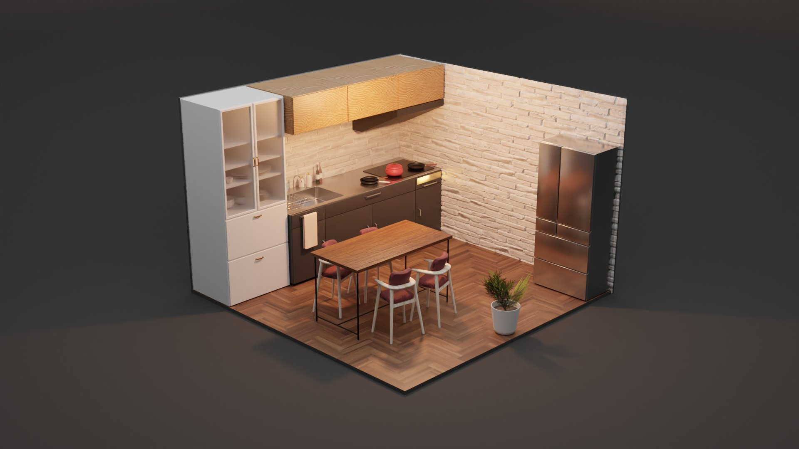
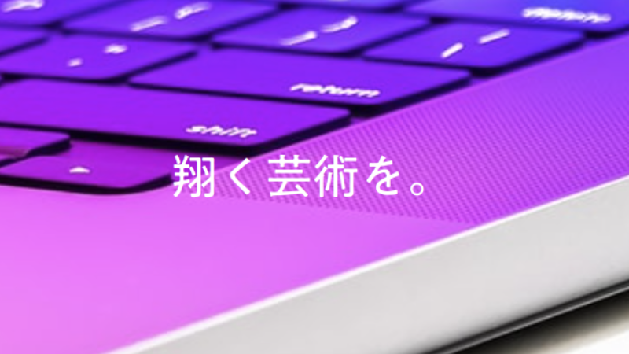

ヒラメキがミライにつながる。
饅頭のポートフォリオ

3DCG
主な使用ソフトはBlenderで、Blender歴は約1年です。
主にミニマムな部屋の制作やインテリアデザイン等を行っています。
動画編集
主な使用ソフトはAviUtlとDavinchi Resolveです。
PV制作やBlenderと融合させた作品を現在制作中です。

ブログ
Infockという名前でブログを運営しています。
PCやスマホネタでブログを執筆しており、1ヶ月で1500PV程度です。
open.Yellow.osプロジェクト
現在はopen.Yellow.osの開発チームに携わっています。
主にデザイン担当で、後々開発関係にも色々な提案や
機能の実装が行えればと思います。